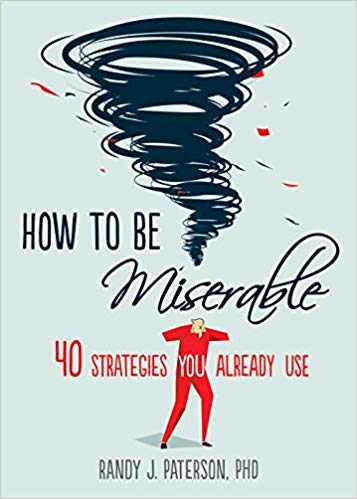

How to be Miserable, by Paterson
Saturday October 5, 2019
CGP Grey recommended this book in his video highlighting seven of its "40 strategies you already use" to increase misery. It's a fun, quick read, during which occasionally some things may hit close to home and force you to remind yourself that the advice is deliberately bad. I especially liked "Lesson 20: Work Endlessly on Your Self-Esteem."
Lesson 20: Work Endlessly on Your Self-Esteem
Do you have a cat? If so, does it seem to think well of itself, or does it appear to slink around in deep shame at being an inferior sort of feline?
Most people sense that the cats they know have perfectly high self-esteem—despite never having had psychotherapy, attending no esteem-building workshops, and reading very few self-help books. How do they do it?
We live in a culture with a deep and abiding faith in the concept of self-esteem. To follow this particular path downward, all you have to do is go along with the crowd. Like them, view self-esteem as something that you are born without and must build up, brick by brick, into a tall and sturdy structure. Assume that self-esteem is something separate from confidence in your ability to perform any particular task, like juggling or changing the oil in your car. This makes it vague and amorphous enough that constructing it becomes a futile—and thus misery-inducing—effort.
But wait. Isn't self-esteem real? You've been taught about it since birth. It can't possibly be just another Easter Bunny, can it?
Let's find out. Imagine a person with terrible self-esteem visiting the bank and then walking to a café for lunch. What's he thinking about?
I probably looked like an idiot when I dropped my pen back there, and the teller could see my bank balance—she probably thought I'm a complete failure. Even now, these people on the sidewalk can see what a loser I am, and my hair is sticking up everywhere. When I get lunch, I'll probably spill it on myself and look even worse.
Sound plausible?
Now imagine a person with great self-esteem doing the same thing. What's he thinking about?
Wow, I really impressed them all at the bank back there—when I bent over to pick up my pen they could see how toned my rear end is, after all that work at the gym, and my balance probably made the teller drool. Look at all these lucky people sharing the sidewalk with me, envying me for my great hair. And when I get to the café, they'll put me at the table in the front window to attract other customers. Hey, I know: let me recite positive affirmations to myself on the way.
You think?
Or is he more likely to be wondering, Do I want the soup or just a chicken sandwich?
The truth is, people with good self-esteem are not constantly evaluating themselves. It's the ones without it who do this. Our culture teaches us that having self-esteem is an active process of building ourselves up. It isn't. Cats, three-year-olds, and adults with self-esteem aren't doing much of anything—they're just focused on the task at hand.
The active process is to have low self-esteem, to be constantly tearing ourselves down. When we wake up in the morning, before our mind starts going, our self-esteem is fine. We only begin feeling inadequate when we start rehearsing the negative story that we tell ourselves. By focusing on self-esteem, we cleverly divert attention from the real issue.
Self-esteem, in other words, does not exist. Self-loathing, however, is very real.
In the classic French film Jean de Florette, townspeople in Provence conspire to trick a man out of the property he has inherited by capping the farm's only source of water, thus starving his crops and ensuring his downfall. Jean strives mightily to haul water to the farm, unaware that it already has an inexhaustible supply just underground.
Similarly, believers in self-esteem strive to import a sense of self-worth, neglecting the fact that no such efforts are really necessary: all they need to do is remove the plug that prevents self-worth from flowing. That plug is the relentless self-criticism in which they engage.
Your mission, then, is to affirm your faith in the concept of self-esteem. Strive to build it up within yourself. Attend workshop after workshop, recite affirmations, invite friends and therapists to exalt your achievements. In doing so, you will reinforce both the hidden conviction that there is much to make up for and the corresponding belief in your inherent faultiness.
Sisyphus found an ideal path to misery: endlessly rolling a stone up a hill, only to have it repeatedly escape his grasp and tumble to the bottom. Trying to create self-esteem is like trying to construct a ladder out of water. Futility leads to unhappiness, and seeing yourself as lacking something that does not actually exist is a perfect example.
